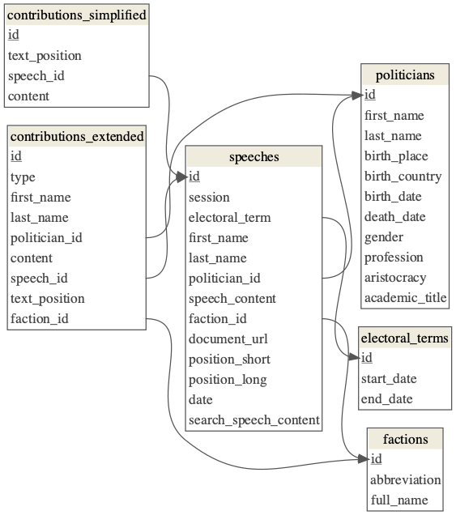

3 Data Report of the Database
3.1 Preface
This data report serves the purpose of documenting the variables and their linkages of the Open Discourse corpus. This report is supplementary to a soon to be published data paper.
The Open Discourse Corpus consists of five main tables. This report provides information about the contents of these tables and the meaning of the respective variables. A detailed documentation about the procedures used to provide this corpus can be found in aforementioned data paper soon.
Furthermore the codebase developed and used to create the corpus can be retrieved from GitHub. This open source codebase can be used to recreate the database from scratch and to contribute to the repository to further improve the quality of the data.
A current data dump can be found at the associated Dataverse. Also, a full text search engine for researching the corpus can be found on the Open Discourse Website (currently only available in German).
3.2 Database Schema

3.3 Speeches Table
This table contains the speeches held in the parliament along with meta information and foreign keys.
placeholder
The speeches table has the following dimensions:
placeholder
3.3.1 Speeches summary table
placeholder
3.3.2 Additional Remarks
3.3.2.1 Position Variables
The position variables provide information about the function of the speaker. It is divided into a short, generic form and a long form.
The positionLong variable is the exact extraction of the functional description of the speaker as can be found in the original protocol.
The positionShort variable is a factor variable of seven different levels. The list below provides more information about the meaning of the seven levels.
Short Position Mapping:
| positionShort | Description |
|---|---|
| Chancellor | The federal chancellor of the Federal Republic of Germany. |
| Guest | Every speaker that does not belong to the other positionShort levels and thus is an external person. |
| Member of Parliament | Every speaker that is mentioned alongside a faction abbreviation is considered a MP. |
| Minister | Every speaker that has the function of a minister of state is a minister. |
| Not Found | No positionShort information could be retrieved from the protocol. |
| Presidium of Parliament | This category contains all speeches held by the (Vice-)Presidents of the Bundestag, the Father/Mother of the House (“Alterspräsident_in”), as well as secretaries (“Schriftführer_in”). |
| Secretary of State | This category contains both the permanent secretaries (beamtete Staatssekretär_in) as well as secretaries of state (parlamentarische Staatssekretär_in). |
3.3.2.2 Speech Content Variable
The speech content variable only contains the actual spoken words of the respective politician. Any kind of interjection or reaction from the plenum is deleted from the speech content variable and replaced by a positional ID in the format of ({ID}). This positional id can be used to link each speech with every contribution during the speech. The contributions can be found in the two contributions tables. Furthermore the positional id represents the exact order and position a contribution occurred and hence can be used to reassemble the original structure of the speeches and interjections/contributions.
3.4 Factions Table
This table contains every faction and parliamentary group that was represented in the Bundestag since 1949.
placeholder
The factions table has the following dimensions:
placeholder
3.4.1 Factions summary table
placeholder
3.4.2 Additional Remarks
All factions are drawn from the base data of the MPs (Stammdaten aller Abgeordneten seit 1949). Additionally, every faction that is mentioned in the protocols but was not present in the base data of the MPs is added. Since we do not only include factions that appear in the protocols, some of the faction IDs in the factions table never occur in the speeches table.
3.5 Politicians Table
This table contains information about every politician that was a member of parliament or member of the government since 1949.
placeholder
The politicians table has the following dimensions:
## Parsed with column specification:
## cols(
## Feature = col_character(),
## Total = col_double()
## )| Feature | Total |
|---|---|
| Number of observations | 4102 |
| Number of variables | 11 |
3.5.1 Politicians summary table
read_csv("../.temp/pol_sum.csv") %>%
kableExtra::kable(format = "html", booktabs = TRUE) %>%
kableExtra::kable_styling(c("striped", "condensed"), latex_options = "striped", position = "center") %>%
kableExtra::column_spec(1, bold = TRUE) %>%
kableExtra::column_spec(5, width = "7,5cm")## Parsed with column specification:
## cols(
## Variable = col_character(),
## Class = col_character(),
## `# unique` = col_double(),
## `Missing Values` = col_character(),
## Description = col_character()
## )| Variable | Class | # unique | Missing Values | Description |
|---|---|---|---|---|
| id | integer64 | 4102 | 0.02% | Primary Key. The missing value count is due to the fact that one ID represents missing information about a politician (-1) |
| firstName | character | 990 | 0.00% | First name of the politician. |
| lastName | character | 3281 | 0.02% | Last name of the politician. |
| birthPlace | character | 2180 | 0.46% | Place of birth of the politician. |
| birthCountry | character | 39 | 0.39% | Country of birth of the politician. |
| birthDate | Date | 3846 | 0.39% | Date of birth of the politician. |
| deathDate | Date | 1783 | 54.58% | Date of death of the politician. |
| gender | character | 3 | 0.39% | Gender of the politician. |
| profession | character | 2208 | 0.39% | Profession of the politician. |
| aristocracy | character | 10 | 99.05% | Royal/noble rank of the politician. |
| academicTitle | character | 19 | 74.43% | Academic title of the politician. |
3.5.2 Additional Remarks
All meta information about the politicians is directly drawn from the base data of the MPs. The Open Discourse corpus only contains a selection of the publicly available personal details of the politicians. A comprehensive resource of the available meta data can be found on the website of the Bundestag. There are some rare cases in which people were members of the government but never held a mandate as a member of the parliament. These politicians are not covered in the base data mentioned above. To fill this gap in the base data, we merge the file with data retrieved from Wikipedia.
3.6 Contributions Tables
The current version of the Open Discourse database contains two contributions tables. Contributions are any kind of interjections and other types of reactions during a speech from the plenum that is recorded by the stenographers. There is a simplified version of the contributions table and an extended one. The simplified version only contains the raw text of the interjection and two foreign keys to map the contribution to the associated speech and the precise position in the speech where the contribution occurred.
The extended contributions table has more detailed meta information but the instances in this table can be faulty. The logic needs further refinement for better results - still we wanted to provide the current state of this approach and hence we labeled this table as being experimental.
3.6.1 Contributions Simplified
placeholder
The simplified contributions table has the following dimensions:
placeholder
3.6.1.1 Simplified contributions summary table
placeholder
3.6.2 Contributions Extended (experimental)
placeholder
The extended contributions table has the following dimensions:
placeholder
3.6.2.1 Extended contributions summary table
placeholder
3.6.2.2 Additional Remarks
This extended version of the contribution table contains detailed meta information. This table is labeled experimental since the extraction of the meta information is faulty at times. This is caused by in the way of how contributions are recorded throughout the electoral periods.
This extended table also introduces a seven level category system that defines the type of the respective contribution. Following table provides an overview of these seven levels:
Contribution Types
| type | Description |
|---|---|
| Beifall | Applause |
| Heiterkeit | Cheerfulness |
| Lachen | Laugther |
| Personen-Einruf | Interjection (by a specific politician) |
| Unruhe | Noisiness/unrest |
| Widerspruch | Disagreement |
| Zuruf | Interjection - not assigned to a specific politician |
| Zustimmung | Agreement |
3.7 Electoral Terms Table
The electoral terms table provides the date information of the beginning and ending of each electoral term.
placeholder
The electoral terms table has following dimensions:
placeholder
3.7.1 Electoral Terms summary table
placeholder